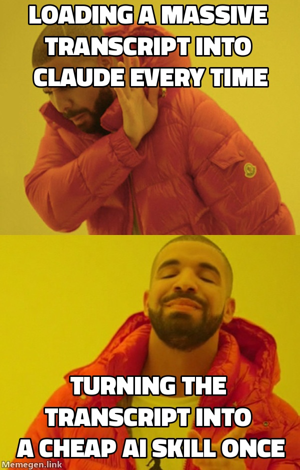

Why go through the effort of prototyping and hardening a workflow into a JSON skill (as we covered in Part 2)? Why not just pass the raw mentor transcript to the AI every single time you need to execute the task?

Because loading a massive transcript every single time just wastes tokens and money.
The Token Economics of AI
Yes, to initially build the skill, you still have to load the massive 12,000-token transcript into your harness. You have to pay the token cost to have the AI analyze the expert advice, test the workflow, and figure out the absolute best approach.
But the real savings happen after you train it.
If you pass the raw transcript to the AI every day to execute the task, you are forcing it to "re-learn" the context every single time. You are paying for the AI to "read" thousands of words of irrelevant information (small talk, tangent stories) just to extract the email strategy.
When you harden the skill, the harness distills that 12,000-token transcript into a hyper-focused, 700-token SOP. From that point on, your execution costs plummet.
| Workflow Type | Context Tokens (Per Run) | Task Data | Total Tokens (50 Runs) |
|---|---|---|---|
| Raw Transcript Strategy | 12,000 | 1,000 | 650,000 Tokens |
| Hardened AI Skill (SOP) | 700 | 1,000 | 85,000 Tokens |
By hardening the process into a skill, we achieve an 87% reduction in token consumption. Not only does this drastically reduce your API costs, but it also significantly reduces latency. An agent processing 1,700 tokens executes tasks in seconds.
Who Should Drive? (Ranking the Agents)
Once you have the JSON Skill, you need an agent to actually physically drive the browser to execute it. Here is the definitive, no-nonsense ranking of how well the major players drive a browser today:
-
1. ChatGPT (with Atlas): The Undisputed #1
OpenAI has merged Codex and Atlas into a single, unified product. Because Atlas is built right in, it is currently the absolute best agent for driving a browser. The killer feature? It enables you to seamlessly import your logins directly from Chrome, removing the biggest friction point in web automation (authentication and session management).
-
2. Claude: A Strong #2
Anthropic’s capabilities are genuinely impressive, and it is very good at navigating messy UIs. However, it has a notable quirk: if you have the Claude extension installed across multiple computers, it occasionally gets confused about which machine you actually intend to drive. It's powerful, but that context-switching bug keeps it out of the top spot.
-
3. Antigravity
While Antigravity is a fantastic agentic IDE for technical work, as a pure web-driving harness for business execution on consumer SaaS interfaces, it currently sits in third place.
The future of custom software isn't just generating code. It is capturing high-value strategy and letting an agent execute it flawlessly, every time.